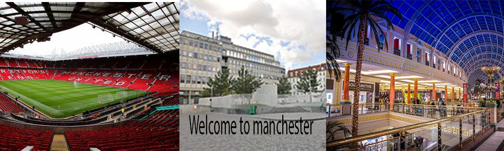

Home trafford centre Manchester City chill factor old trafford
Chill Factor
the chill factor is one of the most popular and well known ice rinks and places to go and sledge has been recognized as the most popular one in england and is located close to the trafford centre off the m60 its a great place to go with your family or friends its disability friendly there are many ramps around the building and people there to offer the support even if you're a new beginner they will give you the help you need until you manage to get it on your own and its a very good price for the amount of time you get with family or friends and the memories are priceless with everyone falling over and they offer safety products like elbow pads and knee pads so you wont get injured and the prices are as followed

click here to find out more information about the Chill Factor!